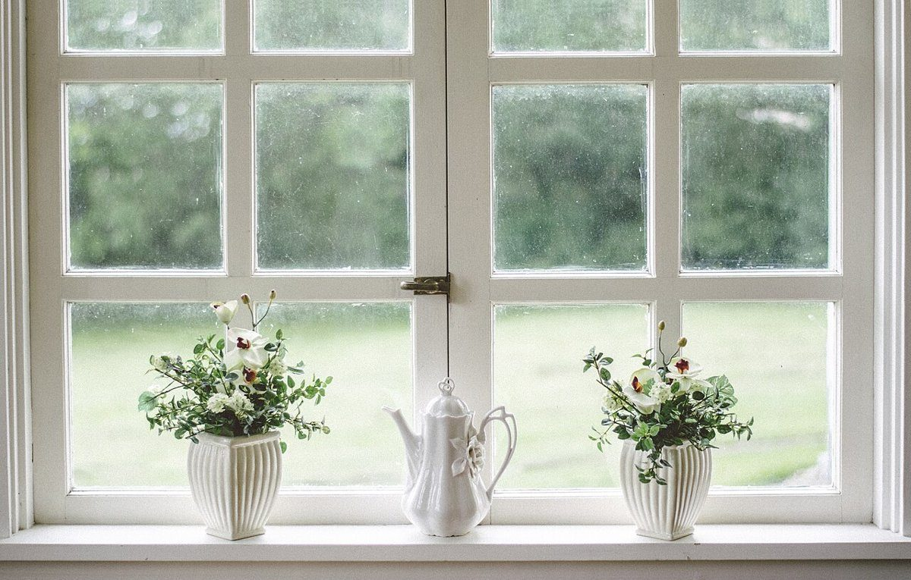
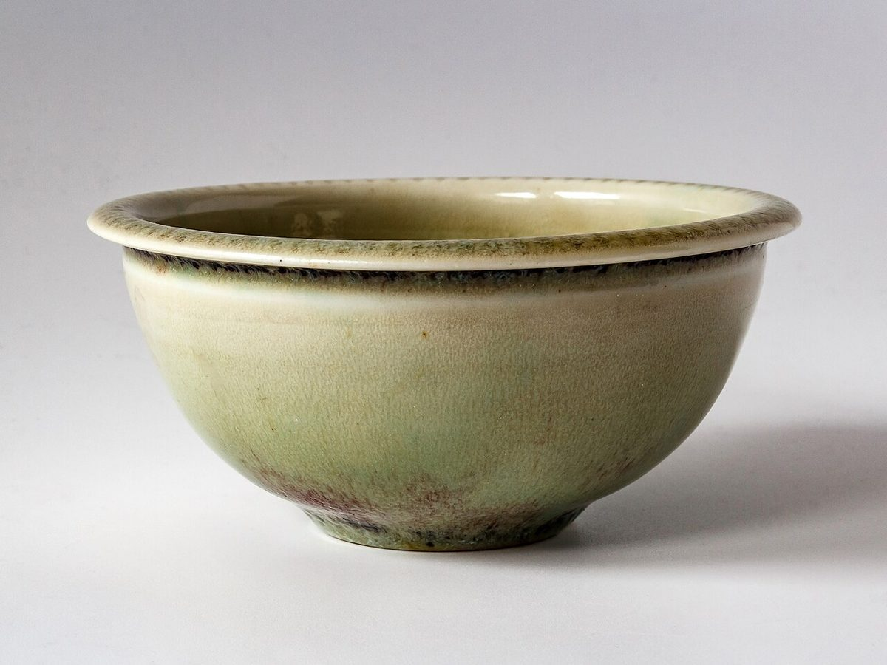

店のこと
店のこと
お店について確認できているのは、所在地とInstagramのアカウントだけです。
「想像してみる」の部分は制作側の想像で、お店の実際の様子・考え・メニューとは関係ありません。
確認できていること
- 店名は「cafe AWA」、業種はカフェ
- 所在地は石川県小松市粟津町ワ-79-4
- 電話番号はなし。連絡はInstagramから
- 営業時間・定休日・メニュー・価格・ご予約・駐車場は準備中

想像してみる
行って、帰ってくる
回文は、端から読んでも逆の端から読んでも同じになる言葉です。制作側は、出かけた道をそのまま戻ってくる往復の道のりを重ねて、ふと立ち寄った場所から少し気分が変わって帰る、そんなひと休みを思い浮かべました。実際のお店の姿ではありません。


もうひと組
軸をはさんで、光と緑
写真はイメージの質感です。お店で使っている器や備品を示すものではありません。